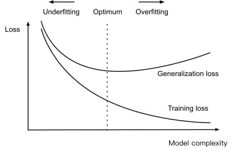
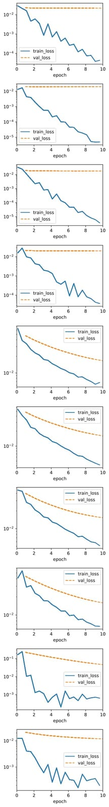
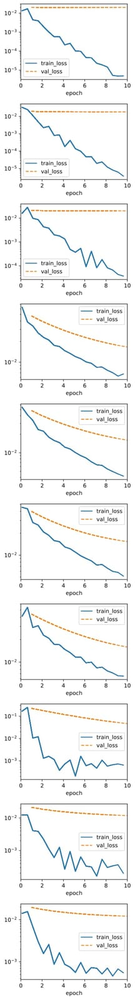

Towards the Multilayer Perceptron
A Quick Cover of the Basics
Chapters 3, 4 & 5 — Based on "Dive into Deep Learning" by Zhang et al.
Instructor: Guðmundur Einarsson
University of Iceland
Based on slides from Hafsteinn Einarsson
Learning Objectives
- Warm up with Quiz 2's written question — a live preview of backpropagation
- Build the linear model and softmax regression, and see why linear models are stuck with straight-line boundaries
- Fix it with the Multilayer Perceptron: hidden layers, activations, forward/backward propagation
- Fight overfitting: weight decay, dropout, early stopping
Three chapters of "Dive into Deep Learning" (Ch. 3, 4 & 5) in one session — dense on purpose, meant to be revisited in your own reading afterward.
Warm-Up: Quiz 2, the Written Question
This was the written question on your last quiz, worth 40 of 80 points. By the end of today you'll be able to derive every step of it from scratch.
A tiny two-layer computation (a miniature "neural network" built entirely from scalars):
Layer 1 (linear) → activation (squaring) → layer 2 (linear/output) → squared-error loss
Given $w_1=1,\ b_1=0,\ x=2,\ w_2=1,\ b_2=0,\ y=5$: compute the forward pass, derive the gradients via the chain rule, and take one gradient-descent step.
Solution, Part 1: The Forward Pass
Plug in the given numbers and compute left to right, caching every intermediate value:
$$z_1 = w_1 x + b_1 = 1\times 2 + 0 = \color{#10099F}{2}$$
$$a_1 = z_1^2 = 2^2 = \color{#2DD2C0}{4}$$
$$z_2 = w_2 a_1 + b_2 = 1\times 4 + 0 = \color{#FC8484}{4}$$
$$L = (z_2-y)^2 = (4-5)^2 = \color{#FFA05F}{1}$$
This is exactly what a real network's forward pass does: apply each layer in order, and cache $z_1, a_1, z_2$ — we'll reuse them going backward.
Solution, Parts 2 & 3: Backward via the Chain Rule
Starting from the loss, work backward — each step reuses the one before it:
$$\frac{\partial L}{\partial z_2} = 2(z_2-y) = 2(4-5) = \color{#FC8484}{-2}$$
$$\frac{\partial L}{\partial a_1} = \frac{\partial L}{\partial z_2}\cdot w_2 = -2\times 1 = \color{#2DD2C0}{-2}$$
$$\frac{\partial L}{\partial z_1} = \frac{\partial L}{\partial a_1}\cdot 2z_1 = -2\times 4 = \color{#10099F}{-8}$$
$$\frac{\partial L}{\partial w_2} = \frac{\partial L}{\partial z_2}\cdot a_1 = -2\times 4 = \mathbf{-8}$$
$$\frac{\partial L}{\partial w_1} = \frac{\partial L}{\partial z_1}\cdot x = -8\times 2 = \mathbf{-16}$$
Every gradient is a product of a "carried" upstream gradient and one local derivative — that's the chain rule, applied mechanically, one layer at a time.
Solution, Parts 4 & 5: Update & the Big Picture
One gradient-descent step ($\alpha=0.01$):
$$w_1 \leftarrow 1 - 0.01\times(-16) = \mathbf{1.16} \qquad w_2 \leftarrow 1 - 0.01\times(-8) = \mathbf{1.08}$$
Both weights increase — the output (4) was below the target (5), so nudging positive weights up helps.
This is backpropagation: a forward pass that caches intermediate values, followed by a backward pass that reuses them, via the chain rule, to get every parameter's gradient efficiently — no separate calculation from scratch for each one.
Everything in today's lecture builds toward being able to do this for a real network, of any depth. Let's start from the beginning.
Part 1: From Data to a Linear Model
Chapter 3 — Linear Neural Networks for Regression
We start with linear models because they let us master the full training recipe — parametrization, loss, and gradient-based optimization — without the complexity of deep networks getting in the way.
Everything we learn here — the loss, the optimizer, the update rule — carries over unchanged to the deepest networks we'll build later.
The Regression Problem
Predicting a numerical value from input features — e.g. predicting house price from area and age.
Linear model: assume the target is a weighted sum of features plus a bias:
$$\hat{y} = \mathbf{w}^\top \mathbf{x} + b \qquad \hat{\mathbf{y}} = \mathbf{X}\mathbf{w} + b$$- Weights $\mathbf{w}$: influence of each feature
- Bias $b$: baseline value when $\mathbf{x}=\mathbf{0}$
- Label $y$: the target value
- $X \in \mathbb{R}^{n\times d}$: design matrix, one row per example
Interactive Linear Regression Demo
Measuring Fit: Squared Error Loss
A loss function quantifies prediction error — smaller is better, and a perfect prediction gives loss 0.
For a single example:
$$l^{(i)}(\mathbf{w}, b) = \frac{1}{2}(\hat{y}^{(i)} - y^{(i)})^2$$
Averaged over the dataset:
$$L(\mathbf{w}, b) = \frac{1}{n}\sum_{i=1}^n l^{(i)}(\mathbf{w}, b)$$
Squaring makes the loss differentiable and convex (one global minimum), and penalizes large errors far more than small ones — but is sensitive to outliers.
Test Your Understanding
Two Ways to Minimize the Loss
Analytic (Normal Equation)
$$\mathbf{w}^* = (X^\top X)^{-1} X^\top \mathbf{y}$$
- Exact, closed-form solution
- Costs $O(d^3)$; needs $X^\top X$ invertible
- Only works for linear regression
Gradient Descent
$$(\mathbf{w}, b) \leftarrow (\mathbf{w}, b) - \eta \nabla_{(\mathbf{w},b)} L$$
- Iterative, approximate solution
- Works for any differentiable loss
- The one recipe that scales to deep learning
$\eta$ is the learning rateA hyperparameter that controls the step size. Too small: slow convergence. Too large: may overshoot the minimum.. We'll use gradient descent from here on — it's the one recipe that scales all the way to deep networks.
Minibatch SGD
In practice we average the gradient over a small minibatch $\mathcal{B}$ rather than one example or the whole dataset:
Batch GD
All data · stable · slow per step
SGD
1 example · noisy · fast per step
Minibatch ✓
32–256 examples · best balance · GPU-friendly
Gradient Descent Animation
Test Your Understanding
Why Squared Loss? A Probabilistic View
Assume observations have Gaussian noise: $y = \mathbf{w}^\top\mathbf{x} + b + \epsilon,\ \epsilon \sim \mathcal{N}(0, \sigma^2)$
Maximum likelihood estimation picks parameters that make the observed data most probable. Taking the negative log-likelihood of $n$ i.i.d. Gaussian observations and dropping the terms that don't depend on $\mathbf{w},b$:
Minimizing squared loss is maximum likelihood estimation under Gaussian noise — not arbitrary, but principled.
The Normal Distribution
Test Your Understanding
Linear Regression as a Neural Network
The simplest possible network architecture — zero hidden layers:
Input layer (features) → weighted connections → single output neuron $\hat y$. No hidden layers = linear model — the trivial case we'll build on.
Test Your Understanding
Generalization: Training vs. Test Error
How do we know a model learned patterns rather than memorized data? We split into a training set (fit the model) and a held-out test set (estimate true performance) — assumed i.i.d.Independent and Identically Distributed: both drawn from the same underlying distribution P(X,Y).

Underfitting
High train & test error, small gap → increase model capacity
Overfitting
Low train, high test error, large gap → regularize or get more data
Weight Decay: Penalizing Large Weights
Among all functions, $f=0$ is simplest — we measure complexity by $\|\mathbf{w}\|$ and add an $\ell_2$ penalty to the loss:
The $(1-\eta\lambda)$ factor decays the weights toward zero at every step — hence "weight decay". Larger $\lambda$ → stronger penalty → simpler function.
Weight Decay in Action
Without Regularization ($\lambda=0$)

Training loss drops, validation loss stays flat — classic overfitting.
With Weight Decay ($\lambda=3$)

Training loss is a bit higher, but validation loss now drops too.
Test Your Understanding
From Regression to Classification
Regression: "How much?"
- Continuous output, e.g. price: $234,567
- Minimize squared error
Classification: "Which category?"
- Discrete categories, e.g. cat / dog / bird
- Cross-entropy loss (today's topic)
From predicting quantities to assigning categories — often with a probability attached.
Hard vs. Soft Assignments
Hard Assignment
- "This IS spam"
- No uncertainty expressed
Soft Assignment
- "85% likely spam"
- Captures confidence/uncertainty
We usually build models that output soft probabilities, then threshold for a hard decision — this gives adjustable decision thresholds and a confidence measure for free.
One-Hot Encoding
Integer labels (cat=1, dog=2, chicken=3) falsely imply an ordering. One-hot vectors avoid it:
| Category | One-Hot Vector |
|---|---|
| 🐱 Cat | (1, 0, 0) |
| 🐔 Chicken | (0, 1, 0) |
| 🐕 Dog | (0, 0, 1) |
Vectors are orthogonal — no implicit similarity between categories — with exactly one component equal to 1, and dimension equal to the number of categories.
Test Your Understanding
A Linear Model for Classification
To estimate a probability for every class, we need one output (affine function) per class. For a toy example with 4 features and 3 classes (cat/chicken/dog): $\mathbf{o} = \mathbf{W}\mathbf{x} + \mathbf{b}$, with $\mathbf{W}\in\mathbb{R}^{3\times4}$.
Every output depends on every input — a fully connected layerEvery input is connected to every output with its own weight.. Softmax regression = single-layer neural network with one output per class, exactly like linear regression but with $q$ outputs instead of one.
The Softmax Operation
Raw outputs (logits) $o_j$ can be negative or huge — not valid probabilities. Softmax fixes that:
Test Your Understanding
From Maximum Likelihood to Cross-Entropy
MLE maximizes $P(\mathbf{Y}\mid\mathbf{X}) = \prod_{i=1}^n P(\mathbf{y}^{(i)}\mid\mathbf{x}^{(i)})$, i.e. minimizes the negative log-likelihood. For one-hot labels, $P(\mathbf{y}\mid\mathbf{x}) = \prod_{j=1}^q \hat{y}_j^{y_j}$, so:
($c$ = true class; every other term vanishes since $y_j=0$)
This is the cross-entropy between the true (one-hot) label distribution and our prediction $\hat{\mathbf{y}}$ — the "surprise" of the truth under our model. Minimizing negative log-likelihood is minimizing cross-entropy.
Interactive Entropy Calculator
Maximum entropy = uniform distribution (max uncertainty). Cross-entropy loss is high whenever the model is uncertain — or confidently wrong.
Cross-Entropy Loss & Its Gradient
Sanity checks
- Perfect prediction: $L=0$
- Random guess, 3 classes: $L\approx1.10$
- Confidently wrong: $L\to\infty$
Gradient (remarkably clean)
$$\frac{\partial L}{\partial o_j} = \hat{y}_j - y_j$$
Predicted minus actual — same form as linear regression!
Test Your Understanding
Interactive Classification Demo
A 2D toy version of softmax regression (real data like Fashion-MNIST: 784 pixels, 10 classes). Add points, train, and watch the boundary form:
Notice: however you arrange the points, the boundary is always a straight line — softmax regression is still a linear model, and cannot represent a curved boundary. That's exactly what motivates hidden layers, next.
From Linear to Deep Networks
We just saw that softmax regression can only draw straight-line decision boundaries — no matter how we tune the weights.
The fix: stack more layers of neurons, with nonlinear activations between them. This is the Multilayer Perceptron (MLP) — the simplest deep network, and our destination for the rest of the lecture.
What Makes a Network "Deep"?

- Multiple layers of neurons, each fully connected to the next
- Hidden layers sit between input and output
- Nonlinear activation functions between layers
This MLP has 4 inputs, 5 hidden units, 3 outputs = 2 computational layers.
Test Your Understanding
Why Do We Need Hidden Layers?
Linear models assume monotonicityAny increase in input always causes the same direction of change in output. and can only carve up space with straight lines.
Example: health risk vs. body temperature is U-shaped — both too high and too low are bad. No single weight can capture "risk increases in both directions." The same limitation shows up in images: whether one pixel should raise "dog" likelihood depends entirely on its neighbors, not the pixel alone.
The Problem: Stacking Linear Layers Buys Nothing
Add a hidden layer, without activation: $\mathbf{H}=\mathbf{X}\mathbf{W}^{(1)}+\mathbf{b}^{(1)}$, $\mathbf{O}=\mathbf{H}\mathbf{W}^{(2)}+\mathbf{b}^{(2)}$. Substituting:
⚠️ An affine function of an affine function is still affine! Depth without nonlinearity is just one big linear model in disguise — the same straight-line boundaries we were trying to escape.
The Fix: Nonlinear Activations
A popular choice: ReLU, $\sigma(x) = \max(0,x)$ — simple, effective gradient flow, widely successful in practice.
Now the network can no longer collapse to a linear model — it can bend decision boundaries into curves. We can chain many such layers: early ones learn edges/colors, later ones learn shapes, textures, and objects.
Test Your Understanding
Universal Approximation Theorem
Cybenko, 1989: a feedforward network with a single hidden layer, given enough neurons, can approximate any continuous function on a compact subset of ℝⁿ to arbitrary accuracy.
What it says ✓
- Existence of a solution
- Universal expressiveness
What it doesn't say ✗
- How to find the weights
- How many neurons, or how to train
Like a programming language: C can express any computable program, but writing the right program is the hard part. Going deep rather than wide is a far more efficient way to gain expressiveness — modern networks have 100+ layers, not millions of neurons in one.
Test Your Understanding
Activation Functions: Adding Nonlinearity
A good activation function is nonlinear (enables complex patterns), differentiable (enables gradient-based optimization), and cheap to compute. Let's explore the three most common choices.
Activation Function Explorer
Comparing Activation Functions
| Property | ReLU | Sigmoid | Tanh |
|---|---|---|---|
| Range | [0, ∞) | (0, 1) | (-1, 1) |
| Zero-centered | No | No | Yes |
| Gradient vanishing | No (for x>0) | Yes | Yes |
| Compute cost | Lowest | Moderate | Moderate |
ReLU's simplicity and resistance to vanishing gradients made deep learning's resurgence possible. Newer smooth variants like GELU and Swish (used in BERT/GPT) often edge out ReLU in very deep networks, at a small extra compute cost.
Test Your Understanding
Forward Propagation
A one-hidden-layer MLP, input $\mathbf{x}\in\mathbb{R}^d$ (bias omitted for simplicity):
Each step is applied in order, left to right — and we cache $\mathbf{z}$ and $\mathbf{h}$ along the way, exactly like the mini example we warmed up with. (In practice we'd also add a weight-decay penalty on $\mathbf{W}^{(1)}, \mathbf{W}^{(2)}$ to the loss, as in Part 1.)
Computational Graph
Visualizing the dependencies: squares are variables, circles are operations, arrows show data flow.
Interactive Forward Propagation
Ready to start forward propagation...
Test Your Understanding
Backpropagation: Computing Gradients
Backpropagation computes the gradient of the loss with respect to every parameter by traversing the network in reverse, applying the chain rule at each step.
Before automatic differentiation, every new architecture meant re-deriving these gradients by hand. Backprop + autodiff is what made deep learning practical.
The Chain Rule, Step by Step
Working backward from the loss, reusing each step's result in the next:
$$\frac{\partial L}{\partial \mathbf{h}} = {\mathbf{W}^{(2)}}^\top \frac{\partial L}{\partial \mathbf{o}} \qquad\text{(back through layer 2)}$$
$$\frac{\partial L}{\partial \mathbf{z}} = \frac{\partial L}{\partial \mathbf{h}} \odot \phi'(\mathbf{z}) \qquad\text{(back through the activation)}$$
$$\frac{\partial L}{\partial \mathbf{W}^{(2)}} = \frac{\partial L}{\partial \mathbf{o}}\,\mathbf{h}^\top \qquad \frac{\partial L}{\partial \mathbf{W}^{(1)}} = \frac{\partial L}{\partial \mathbf{z}}\,\mathbf{x}^\top$$
Output → hidden → activation → weights. Every step reuses values already computed going forward.
Interactive Backpropagation Visualization
Ready to start backpropagation...
Vanishing and Exploding Gradients
A deep network is a composition $f_L\circ\cdots\circ f_1$. The chain rule makes an early layer's gradient a product of many matrices — each one can shrink or amplify it.
Sigmoid/Tanh
Max derivative 0.25 (sigmoid). Stack $n$ layers: $0.25^n \to 0$ — deep layers stop learning.
Poor Initialization
Weights too large → exploding. Too small → vanishing.
Fix: ReLU (no saturation for $x>0$) + careful initialization — coming up next.
Test Your Understanding
Breaking the Symmetry
If all weights start identical (e.g. all zero), every hidden unit computes the same function and gets the same gradient forever — the network acts like a single unit.
Fix: random initialization breaks the symmetry so each unit learns something different — but the scale of the randomness matters too.
Xavier/Glorot Initialization
Goal: keep activation and gradient variance stable across layers, both forward ($n_{\text{in}}\sigma^2=1$) and backward ($n_{\text{out}}\sigma^2=1$). Xavier compromises between both:
| Variant | Formula | Best for |
|---|---|---|
| He/Kaiming | $\sigma=\sqrt{2/n_{\text{in}}}$ | ReLU |
| LeCun | $\sigma=\sqrt{1/n_{\text{in}}}$ | SELU |
PyTorch's nn.Linear defaults to a Kaiming-style init — often the difference between a network that trains and one that doesn't.
Test Your Understanding
Early Stopping
Key discovery: neural networks tend to fit clean patterns before they fit noise.
So: stop training once validation error stops improving — before the model starts memorizing noise.
Interactive Early Stopping Demonstration
Patience: track the best validation error so far; stop if it hasn't improved for patience epochs. Typical: 5–20.
Test Your Understanding
Dropout: A Powerful Regularization Technique
Randomly "dropping out" neurons during training breaks co-adaptation and prevents overfitting — injecting noise into hidden layers, not just the input.
With dropout probability $p$, each activation $h$ becomes:
$$h' = \begin{cases} 0 & \text{with probability } p \\ h/(1-p) & \text{otherwise} \end{cases}$$Unbiased ($E[h']=h$) and training-only — disabled at test time. In PyTorch: nn.Dropout(p).
Interactive Dropout Demonstration
Test Your Understanding
Putting It All Together
From a single line to a full neural network
| Model | Prediction | Loss | Decision boundary / fit |
|---|---|---|---|
| Linear Regression | $\hat{y}=\mathbf{w}^\top\mathbf{x}+b$ | Squared error | Straight line |
| Softmax Regression | $\hat{\mathbf{y}}=\mathrm{softmax}(\mathbf{Wx}+\mathbf{b})$ | Cross-entropy | Straight line (hyperplane) |
| Multilayer Perceptron | $\mathbf{W}^{(2)}\phi(\mathbf{W}^{(1)}\mathbf{x}+\mathbf{b}^{(1)})+\mathbf{b}^{(2)}$ | Cross-entropy / squared error | Curved / arbitrary |
Everything still to come this semester — CNNs, RNNs, Transformers — is this same recipe (layers + nonlinearity + gradient descent) at a larger scale.
Key Takeaways
- Linear models minimize a loss via gradient descent — the same recipe scales to arbitrarily deep networks
- Softmax + cross-entropy give a remarkably clean gradient ($\hat{y}-y$) and generalize the linear recipe to classification
- Stacking linear layers without nonlinearity buys nothing — activations are what make depth meaningful
- Backpropagation is just the chain rule, applied systematically — and automated by modern frameworks
- Overfitting is manageable: weight decay, dropout, and early stopping all trade training fit for generalization